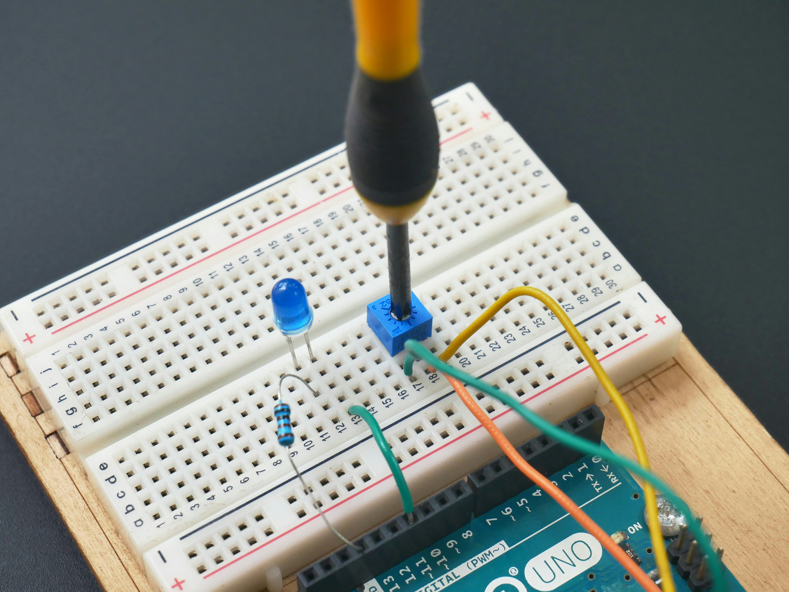

Pour les étudiants en troisième année de licence en ingénierie informatique, le programme offre une spécialisation approfondie dans des domaines clés de l'informatique, avec une exploration avancée de concepts et de technologies spécialisées. Voici un aperçu des cours proposés:
Réseaux et Télécoms (Réseaux sans fil, Signaux et Spectre) :
Ce cours plonge les étudiants dans les technologies sans fil, les concepts de transmission de signaux et l'analyse du spectre, leur permettant de comprendre les communications modernes et les défis associés à la gestion du spectre radio.
Génie Logiciel 1 (Développement d'Applications N-Tiers, Architectures des Logiciels) :
Les étudiants explorent les architectures logicielles avancées, les méthodes de développement d'applications distribuées et les principes de conception pour construire des logiciels évolutifs et robustes.
Technologies Embarquées (Développement Mobile, Introduction aux IoT) :
Ce cours offre une introduction aux technologies embarquées avec un focus sur le développement mobile et les concepts fondamentaux des objets connectés (IoT), préparant les étudiants à concevoir des systèmes intégrés intelligents..
|

|
|
|
Gestion de Données Structurées (Format d'échange de données, Base de Données Avancée):
Les étudiants acquièrent une compréhension avancée des formats de données, des techniques de stockage et des méthodes de gestion de bases de données, y compris les aspects avancés de la modélisation des données et de l'optimisation des requêtes. .
Génie Logiciel 2 (Développement d'Applications Orienté Service, Génie Logiciel) : Les étudiants approfondissent leur compréhension du génie logiciel en explorant les architectures orientées services (SOA), les méthodologies de développement logiciel et les pratiques d'ingénierie logicielle avancées..
Services Informatiques Avancés (Infrastructure Cloud, Services VDO à Valeur Ajoutée): Ce cours se concentre sur les technologies de pointe telles que le cloud computing, les services à valeur ajoutée (VDO) et les architectures distribuées, fournissant aux étudiants une expertise pratique dans la mise en œuvre de solutions informatiques avancées. .
|
| Enseignement |
Description |
Réseaux sans fil |
Ce cours explore les technologies de communication sans fil, les protocoles associés et les architectures de réseau nécessaires pour prendre en charge les communications mobiles et sans fil. |
Signaux et Spectre |
Ce cours se concentre sur l'analyse des signaux, la transformation de Fourier et la gestion du spectre, offrant aux étudiants une compréhension approfondie des concepts de base de la communication. |
Développement d'Applications N-Tiers |
Les étudiants apprendront les principes de conception et de développement d'applications distribuées sur plusieurs niveaux, en se concentrant sur la scalabilité, la fiabilité et la gestion des données. |
Architecture des Logiciels |
Ce cours explore les architectures logicielles avancées, y compris les modèles de conception, les styles architecturaux et les technologies émergentes pour la construction de logiciels complexes et évolutifs. |
Développement Mobile |
Les étudiants apprendront les principes et les technologies de développement d'applications mobiles pour les plates-formes iOS et Android, en se concentrant sur la conception d'interfaces utilisateur et l'intégration des fonctionnalités mobiles. |
Introduction aux IoT |
Ce cours offre une introduction aux objets connectés (IoT), couvrant les architectures, les protocoles de communication et les applications dans des domaines tels que la domotique, la santé et l'industrie. |
Format d'Échange de Données |
Les étudiants exploreront les formats de données courants tels que JSON et XML, ainsi que les protocoles de communication associés pour l'échange de données entre systèmes informatiques. |
Base de Données Avancée |
Ce cours approfondit les concepts de base de données relationnelles avec des sujets avancés tels que les transactions, la gestion de la concurrence et les techniques d'optimisation de requêtes. |
Développement d'Application Orienté Service |
Les étudiants apprendront à concevoir, développer et déployer des applications distribuées basées sur des services, en utilisant des architectures orientées services (SOA) et des technologies telles que les services web. |
Génie Logiciel |
Ce cours couvre les principes du génie logiciel, y compris le processus de développement logiciel, la gestion de projet, la qualité logicielle et les méthodes de test. |
Infrastructure Cloud |
Les étudiants exploreront les technologies et les architectures de cloud computing, y compris les services de cloud public et privé, le stockage distribué, la virtualisation et la gestion des ressources. |
Service VDO à Valeur Ajoutée |
Ce cours se concentre sur la conception, le développement et le déploiement de services à valeur ajoutée basés sur la vidéo, y compris la diffusion en continu, la vidéo à la demande (VOD) et les services de vidéoconférence. |
Innovation Technologique |
Les étudiants exploreront les tendances technologiques émergentes, les méthodes d'innovation et les stratégies pour l'adoption de nouvelles technologies dans le développement de produits et de services informatiques. |
Administration Réseau |
Ce cours couvre les principes et les pratiques de l'administration de réseaux informatiques, y compris la configuration, la gestion des utilisateurs, la sécurité réseau et le dépannage. |
Sécurité des Réseaux |
Les étudiants apprendront les techniques et les outils de sécurité des réseaux, y compris la détection des intrusions, la cryptographie, les pare-feu et les politiques de sécurité des informations. |
Droit des NTIC |
Ce cours examine les aspects juridiques et éthiques des technologies de l'information et de la communication (TIC), y compris la confidentialité des données, la propriété intellectuelle, la cybercriminalité et la réglementation des TIC. |
Stage |
Le stage offre aux étudiants l'occasion d'acquérir une expérience pratique en travaillant dans des entreprises ou des organisations liées à leur domaine d'études, sous la supervision d'un professionnel expérimenté. |
Leadership et Entrepreneuriat |
Ce cours vise à développer les compétences en leadership, la pensée entrepreneuriale et la gestion de projet, en préparant les étudiants à des rôles de leadership dans l'industrie des technologies de l'information. |